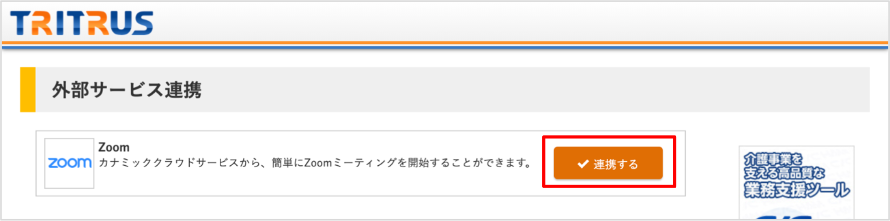
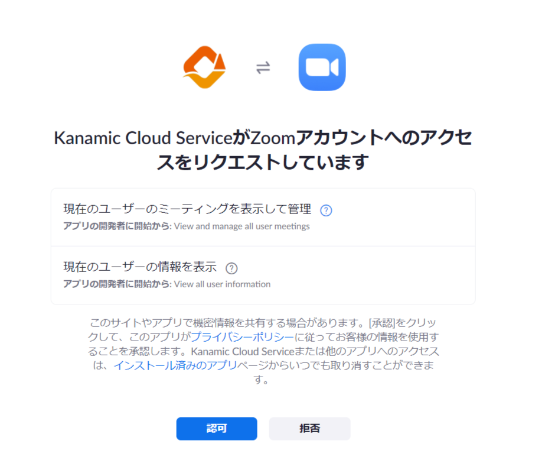
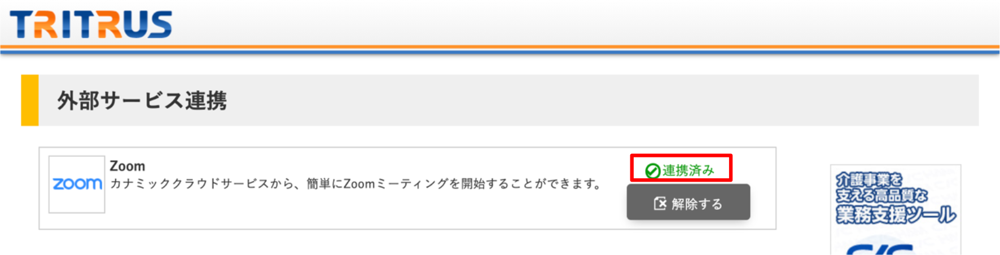
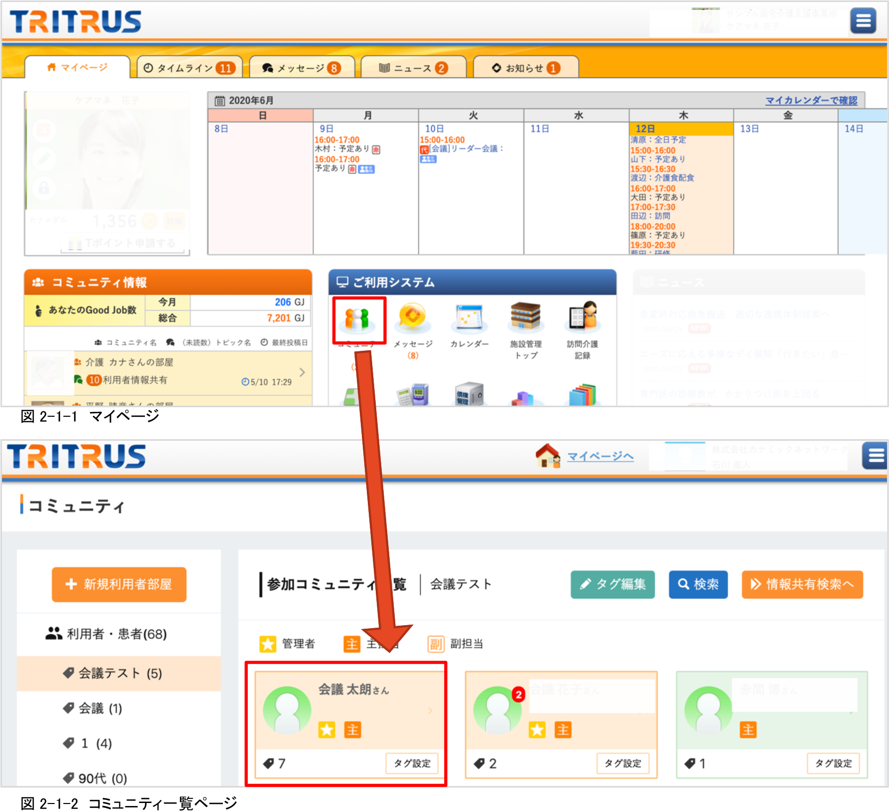
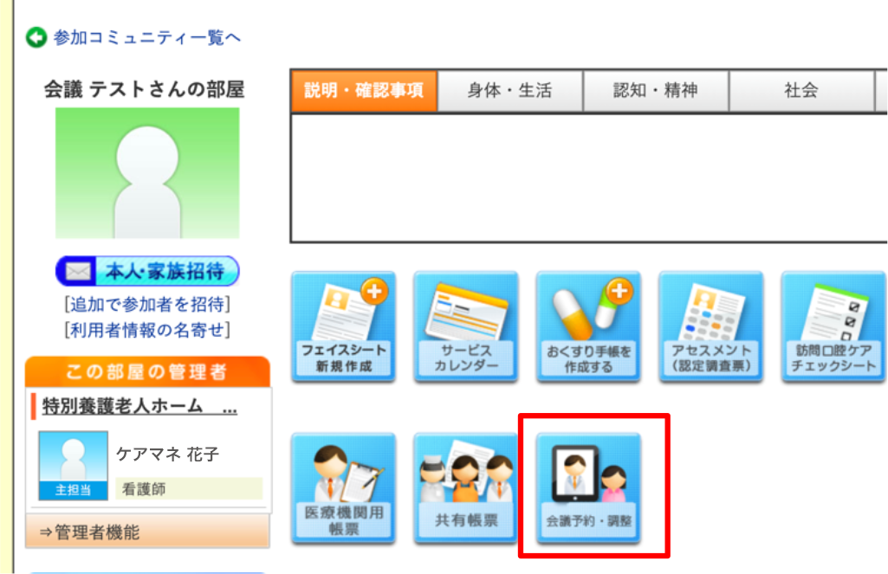
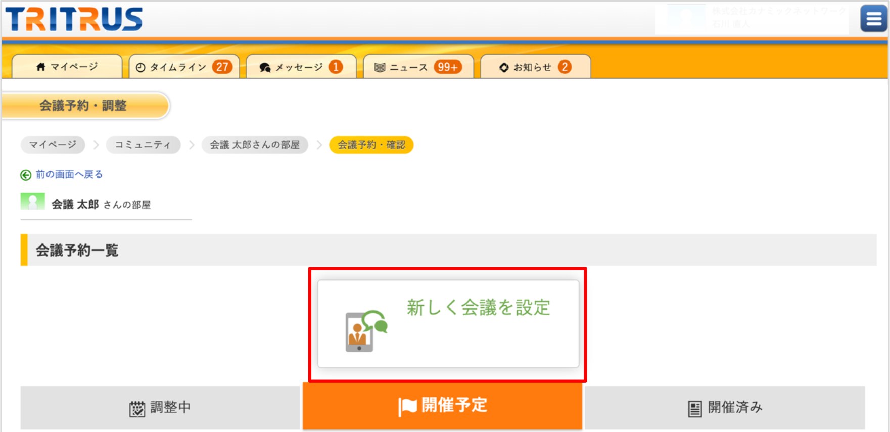
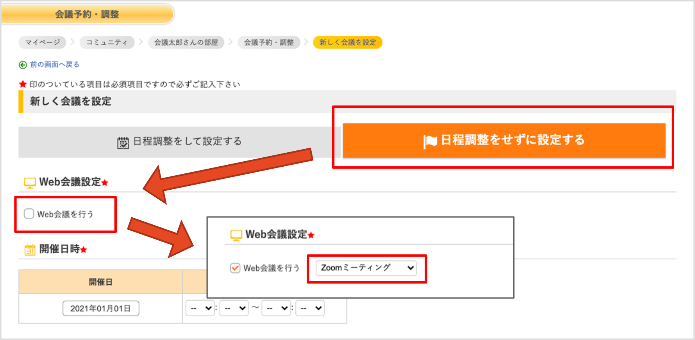
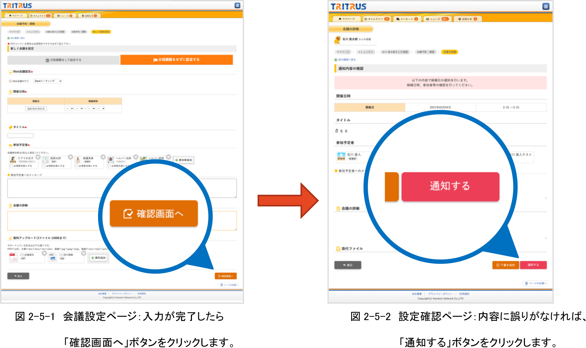
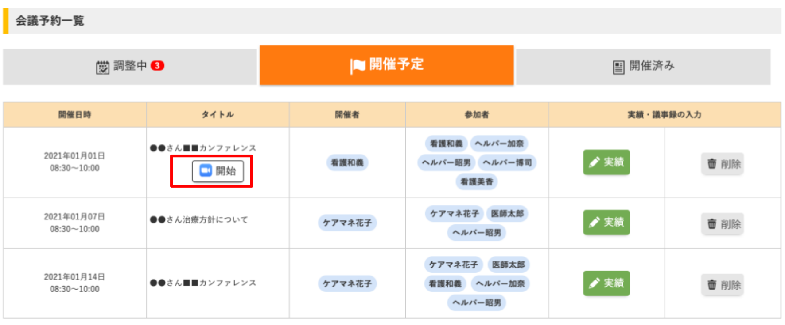

≪前提Assumptions≫
-
・Zoomアカウントを取得していることYou have a Zoom account
- ・カナミック クラウドサービスのアカウントを取得していることYou have a Kanamic Cloud Service account
１．カナミック クラウドサービスにログイン後、右上のメニューから「外部サービス連携」
をクリックします。(図1-1参照) After logging in to the Kanamic Cloud Service, click 「外部サービス連携」 ("Connect with
External Service") from the menu on the upper right.
(See Figure 1-1).
２．外部サービス連携ページのZoomの欄にある「連携する」ボタンをクリックします。
(図1-2参照) In the “Zoom” field of the 「外部サービス連携」 ("Connect with External Service") screen, click the 「連携する」
(“Connect”) button (see Figure 1-2).

図1-2 外部サービス連携ページ Figure 1-2: "Connect with External Service” screen
３．Zoom側の画面が表示されます。The Zoom screen appears.
Zoomにログインしていない場合は、ログイン画面が表示されます。If you are not logged in to Zoom, you will be brought to the Zoom login
screen.
ログイン後、以下のような画面に遷移しますので、内容を確認後、「許可」ボタンをクリックしてください。(図1-3参照) After logging in to Zoom, the following screen will
appear. Examine the request and click the 「許可」 ("Allow") button (see Figure 1-3).

図1-3 Zoomリクエスト確認ページ Figure 1-3: Zoom requests screen
４．外部サービス連携ページに戻ると、連携済みを確認することができます。(図1-4参照) When you return to the 「外部サービス連携」
("Connect with External Service") screen, the word 「連携済み」 (“Connected”) appears as seen below (Figure 1-4).

図1-4 外部サービス連携ページ（Zoom連携後） Figure 1-4: "Connect with External Service” Screen (prior to connecting to Zoom)
※「解除する」ボタンをクリックすると、Zoomとの連携を解除することができます。You can disconnect from Zoom by clicking the 「解除する」 (“Disconnect”)
button.
１．会議を行いたい利用者（患者）部屋へ移動します。(図2-1-1、図2-1-2参照) Open the digital room of the care
recipient/patient for whom you wish to conduct a meeting. (See Figure 2-1-1 and Figure 2-1-2)

２．「会議予約・調整」をクリックします。(図2-2参照) Click on 「会議予約・調整」 (“schedule/arrange meeting”) (see
figure 2-2).

図2-2 コミュニティ一覧ページ Figure 2-2: “Community List” Screen
３．会議予約・調整画面から「新しく会議を設定」をクリックします。（図2-3参照) From the 「会議予約・調整」 (“schedule/arrange
meeting”) screen, next click on 「新しく会議を設定」 (“set up new meeting”).

図2-3 会議予約・調整ページ Figure 2-3:: “schedule/arrange meeting” screen
４．「日程調整せずに設定する」をクリックし、Web会議設定で「Zoomミーティング」を選択します。（図2-4参照) Click on 「日程調整せずに設定する」
(“set up a meeting without scheduling date/time”) and under web conferencing settings select 「Zoomミーティング」 (“Zoom
meeting”) (See Figure 2-4).
※「日程調整をして設定する」場合も同じようにZoomミーティングを開始できます。*You can also initiate a Zoom meeting via 「日程調整をして設定する」 (“set up a
meeting and schedule date/time”).

図2-4 会議設定ページ Figure 2-4: web conferencing settings screen
５．その他必要事項（開催日時、参加予定者等）を入力後、画面下部の「確認画面へ」ボタンをクリックし(図2-5-1参照)、内容確認後、「通知する」ボタンで会議を確定します。(図2-5-2参照) After entering
other necessary information (date and time of the event, planned participants, etc.), click the 「確認画面へ」
("Proceed to Confirmation Screen") button at the bottom of the screen (See Figure 2-5-1). Next, double check the
meeting details and click the 「通知する」 ("Notify") button to finalize the meeting (See Figure 2-5-2).

６．設定した会議の時間になると、会議予約・調整画面に「開始」ボタンが
表示されますので、クリックするとZoomミーティンを開始することができます。
（図2-6参照) When the scheduled time of the meeting arrives, the 「開始」 (“Start”) button will appear on the
(“schedule/arrange meeting”) screen (from (3.) above). Click this button to start the Zoom meeting. (Figure 2-6)

図2-6 会議予約・調整画面：開催予定欄に、設定した会議の一覧が表示されます。 Figure 2-6: The meeting should appear within the “scheduled meetings” field of the “schedule/arrange meeting” screen.